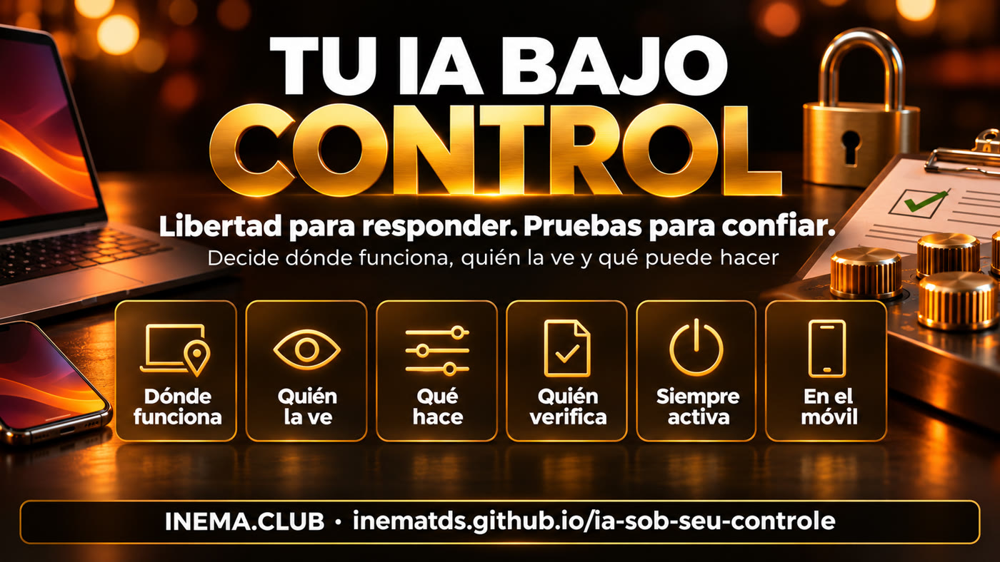

IA sin censura
Se refiere a las restricciones de respuesta: el modelo se eligió o modificó para rechazar menos solicitudes. Puede ejecutarse localmente o a través de un proveedor externo. Esto no garantiza privacidad ni precisión.
Con el método IA bajo tu control, eliges dónde trabaja, quién ve tus datos y qué pruebas debe aportar antes de que confíes.
Este es un kit gratuito de decisión y verificación para quienes usan IA en el trabajo. Separa dos decisiones: quién puede acceder a los datos y qué solicitudes acepta responder el modelo. El kit incluye un ejercicio con una respuesta conocida, una ficha para completar y un verificador local para registrar tus decisiones. Para entender el tema, basta con leer; para ejecutar el verificador, necesitas Python. No instala ni configura modelos de IA.

El video explicativo está en producción. Ya puedes explorar el análisis y el ejercicio de abajo.
Piensa en un empleado con acceso a la oficina: hablar con franqueza, guardar documentos y hacer bien los cálculos son capacidades distintas.
Se refiere a las restricciones de respuesta: el modelo se eligió o modificó para rechazar menos solicitudes. Puede ejecutarse localmente o a través de un proveedor externo. Esto no garantiza privacidad ni precisión.
Se refiere a quién puede acceder a tus datos. Ejecutarla en tu propio dispositivo es una opción, siempre que la tarea no envíe contenido a servicios externos. Una IA privada puede seguir rechazando solicitudes.
Se obtiene verificando: volver a hacer los cálculos, comparar con los datos originales y ejecutar pruebas. Que dos modelos coincidan todavía no es una prueba.
Este repo ofrece un kit de decisión y verificación. Te ayuda a evaluar por separado la privacidad, la libertad de respuesta y la calidad. No instala una IA privada ni un modelo sin censura.
La clase reúne cinco opciones. Cada una responde a una necesidad; puedes combinar las que te resulten útiles.
Las herramientas, los modelos y las ofertas cambian. Aquí no repetimos descuentos, precios ni promesas de rendimiento de la clase como si fueran resultados medidos por INEMA.
Usa la misma tarea antes de cambiar de modelo. Las cifras de abajo son ficticias y la respuesta se puede comprobar a mano.
Enero: ingresos de R$ 120 mil, gastos de R$ 90 mil. Febrero: ingresos de R$ 100 mil, gastos de R$ 110 mil. ¿Cuál fue el resultado de cada mes y del bimestre? ¿Aumentaron los ingresos?
Enero: +R$ 30 mil. Febrero: −R$ 10 mil. Bimestre: +R$ 20 mil. Los ingresos cayeron aproximadamente un 16,67% de enero a febrero. Compara los cálculos, no la seguridad con que se dio la respuesta.
Pide al primer modelo que responda. Entrega los datos originales y la respuesta al revisor. Por último, compara ambos con la referencia de arriba. Registra los errores, el tiempo y lo que tuviste que corregir. Este ejercicio es una demostración con respuestas, no una prueba exhaustiva de calidad.
Marca solo lo que ya hayas comprobado. Esta lista solo se guarda en esta página y no envía respuestas.
0 de 5 puntos verificados.
Descarga un modelo compatible, cárgalo en el ordenador o en PocketPal y pruébalo en modo avión. Comprueba también las herramientas: la búsqueda y los servicios externos necesitan conexión.
Mantén el ordenador disponible o usa una VPS. Restringe el acceso mediante la red privada y comprueba los permisos; los costes y el mantenimiento siguen existiendo.
Compara modelos con tu tarea. Comprueba también la calidad, el idioma y las herramientas. «Abliterated» describe una intervención para reducir los rechazos; no es un sello de fiabilidad.
Traza el recorrido del archivo hasta la respuesta. Revisa la sincronización, el historial y las herramientas externas. Usa una copia ficticia en la primera prueba.
No necesitas esta parte para entender lo anterior.
Python 3.10 o posterior y Git. Sin bibliotecas adicionales, cuenta, clave ni llamadas a modelos. Los comandos de abajo funcionan en la terminal de Linux, macOS o Windows con Python instalado; en Windows, si es necesario, sustituye python3 por py.
Instala Python 3.10 o superior y Git con los instaladores de tu sistema. En Windows, habilita la opción de añadir Python al PATH durante la instalación. En macOS, usa los instaladores oficiales; en Ubuntu, puedes instalar los paquetes de abajo. Si los comandos de versión ya funcionan, continúa con el paso 1.
python3 --version git --version
Ubuntu, si aún faltan:
sudo apt update sudo apt install python3 git
JSON es un archivo de texto organizado por nombres y valores. Mantén las comillas en los textos y las comas entre los campos. En los campos de evidencia, true significa sí y false significa no, sin comillas. El ejemplo de abajo es solo una demostración de cómo rellenarla, no es una prueba de una evaluación real. Cambia el modelo por el nombre que realmente usaste y marca sí solo después de comprobarlo.
{
"objetivo": "Conferir o relatório fictício",
"dados": "sinteticos",
"execucao": "local",
"modelo": "modelo-demonstracao",
"ferramentas": "nenhuma",
"revisao": "humana",
"acesso": "somente-dispositivo",
"offline_necessario": true,
"evidencias": {
"sem_rede": true,
"resultado_conferido": true,
"permissoes_conferidas": true
}
}Las opciones aceptadas para cada campo aparecen en la salida del verificador si introduces un valor no válido. Los archivos y mensajes del kit están en portugués.
git clone https://github.com/inematds/ia-sob-seu-controle.git cd ia-sob-seu-controle python3 -m unittest discover -s tests -v
Las pruebas ejercitan casos válidos, incompletos y contradictorios sin conectarse a la red.
Abre el archivo de abajo en un editor. El nombre del modelo empieza como marcador de posición y las evidencias empiezan como falsas: el ejemplo debe pedir correcciones. Usa solo true o false, sin comillas, en los campos de evidencia.
kit/exemplos/ficha.json
Campos: objetivo; sensibilidad de los datos; ejecución local, VPS o proveedor; modelo; herramientas; revisor; acceso; necesidad de trabajar sin conexión; evidencias de la verificación.
python3 scripts/conferir.py kit/exemplos/ficha.json
Salida invalida (código 2): falta un campo o es inválido. revisar (código 1): faltan pruebas o hay una contradicción. ficha-conferida (código 0): la ficha declarada es coherente; lee también los avisos.
Este programa no inspecciona tu máquina, no verifica la veracidad de lo que marcaste ni certifica la privacidad. Te ayuda a no olvidar decisiones.
Entrega el informe ficticio al modelo elegido y el prompt al revisor. Esta etapa se realiza en la aplicación que ya usas; el kit no hace la llamada.
kit/exemplos/relatorio-ficticio.md kit/prompts/revisor.md